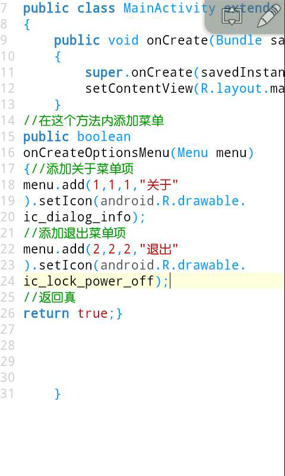
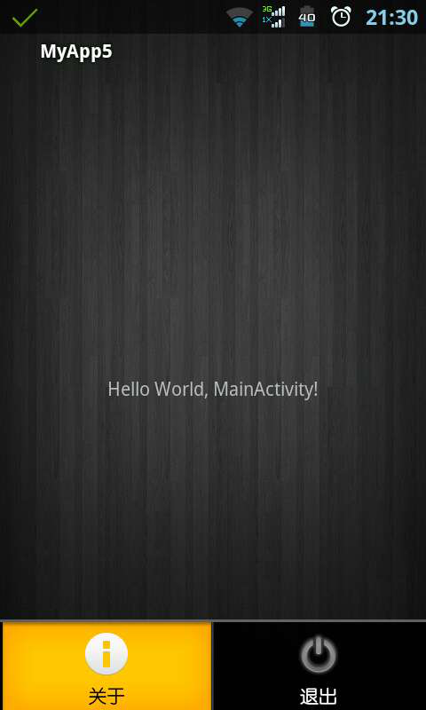
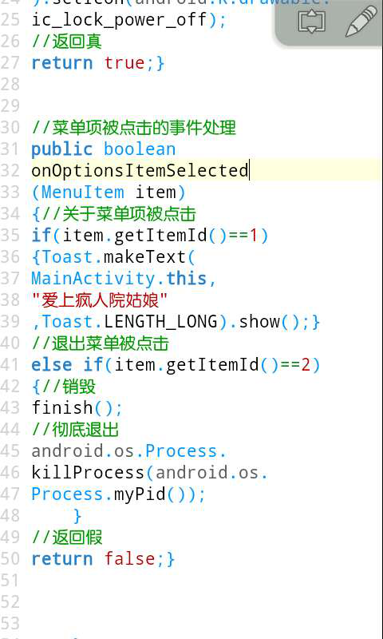
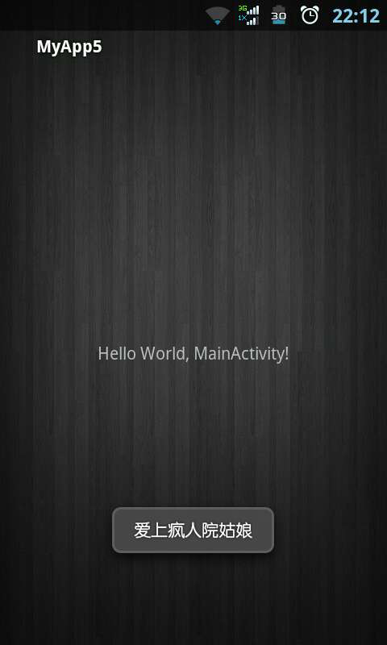

OptionsMenu介绍(17课)
什么是OptionsMenu呢，就是选项菜单，我们的应用程序中按我们屏幕的下方的菜单键就会弹出一个菜单项，上面有关于啊，退出什么的，下面我们就通过代码来为大家讲解。
我们新建一个项目，打开我们的java代码，复写里面的 onCreateOptionsMenu(Menu menu)我们在这个方法里面来添加菜单项，使用menu.add()方法来添加我们的菜单项，里面接受4个参数，第1个参数表示组别，第2个参数表示该菜单项的id，第3个参数表示顺序，第4个参数表示内容。我们还可以通过setIcon()方法来添加一个图标，在这里我们使用自带的图标。我们在这里添加一个关于和一个退出菜单项。最后返回一个布尔型，这里介绍一下布尔型boolean，该类型只有两种结果，true表示为真，false表示假。这里我们返回真才能显示我们的菜单，如果返回假则不会显示。

然后运行我们的项目，我们按手机屏幕的下方是不是出现了两个菜单项，一个关于菜单项和一个退出项，我们点击是没有响应的，因为我们还没有添加事件处理。

接下来我们继续打开我们的java代码进行我们事件处理的编写。我们复写里面的 onOptionsItemSelected (MenuItem item)方法，在我们的菜单项被点击的时候会触发该方法，我们怎样判断是点击了哪个菜单项呢，在上面我们有说过添加菜单的方法第2个参数代表该项的id，我们的关于项的id为1，退出的id为2，该方法传递进来一个item参数，我们可以使用getItemId()方法来得到id，如果值为1，则是关于被点击，要是值为2则是退出被点击，我们在关于被点击的时候用Toast显示爱上疯人院姑娘，点击退出的时候我们使用finish()方法来销毁，程序并没有完全退出，还存在进程里面，我们使用 android.os.Process. killProcess(android.os. Process.myPid());方法来彻底退出程序。

接下来我们再运行我们的项目，点击menu弹出菜单，我们点击关于后就会下面显示爱上疯人院姑娘，点击退出项，我们的程序将会退出。
